izquierda / derecha: antes y después. + y - : zoom. Esc cierra
ALMAHUE EXPORT SPA, modo real, periodo 2026-10. El recuadro verde y la etiqueta NUEVO están solo en la captura, no en el sistema. Un clic abre la imagen. La rueda o las teclas + y - hacen zoom. Izquierda y derecha cambian entre el antes y el después. Esc cierra. No se apretó Traspasar y cerrar, Contabilizar, Notificar, Imprimir, Ver PDF, Importar, Registrar apertura, Sincronizar ni Excel.
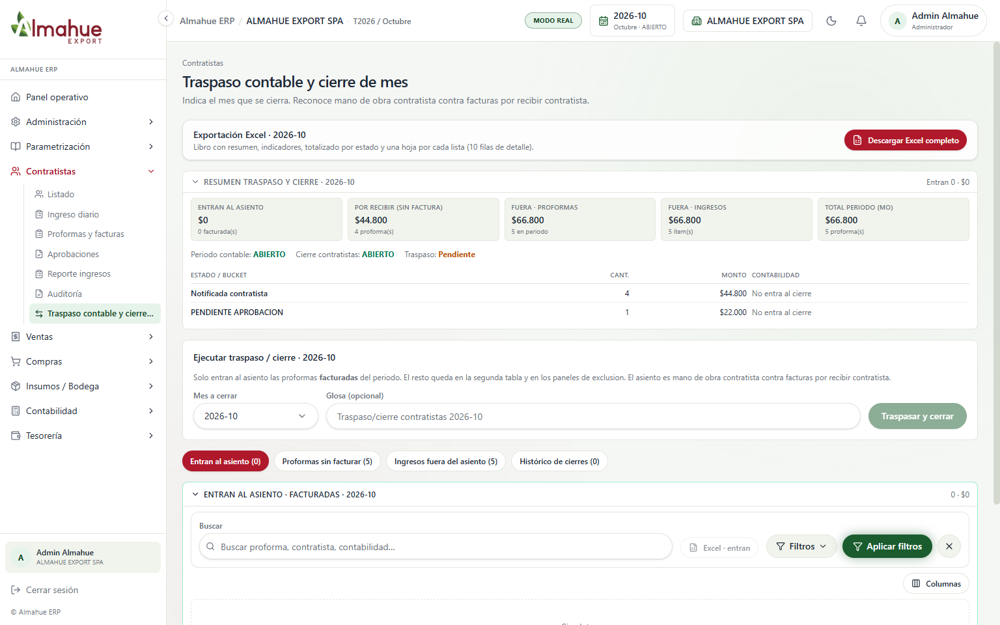
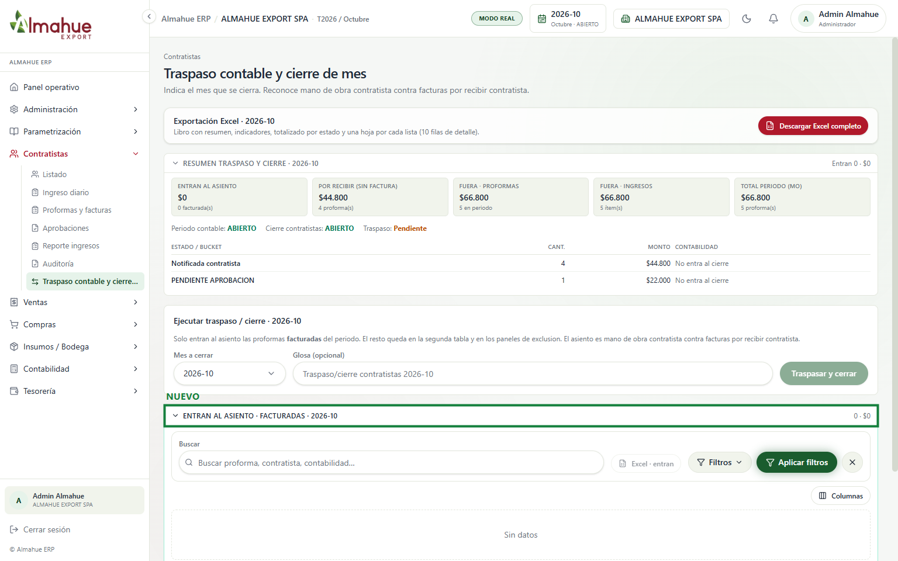
Se quitó la fila de botones que repetía las mismas listas. Cada bloque (entran al asiento, proformas sin facturar, ingresos fuera del asiento e histórico) se abre y se cierra solo, con la flecha hacia abajo si está abierto. Sigue entrando al asiento únicamente lo facturado de octubre. No se apretó Traspasar y cerrar.
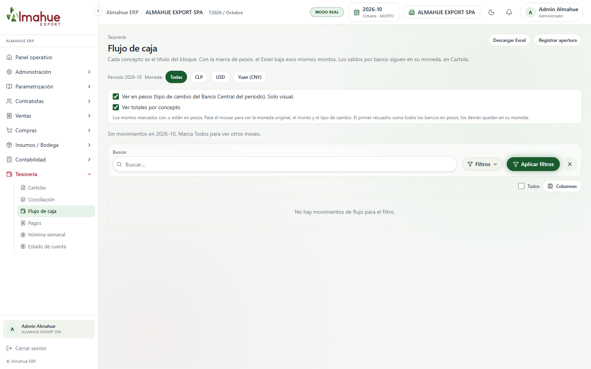
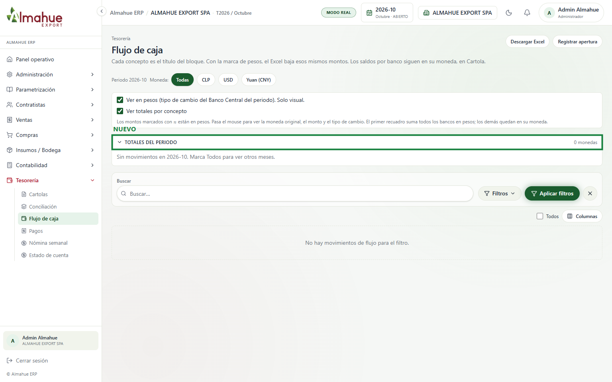
Los totales del periodo quedaron en un bloque que se pliega. En octubre no hay movimientos, así que el resumen dice 0 monedas. No se apretó Registrar apertura ni Descargar Excel.
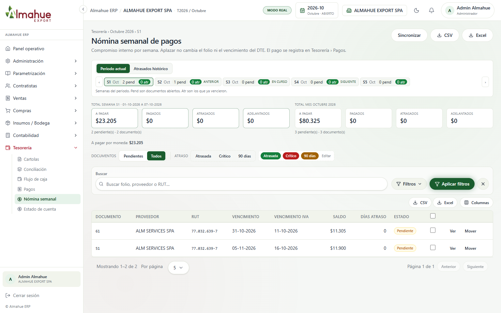
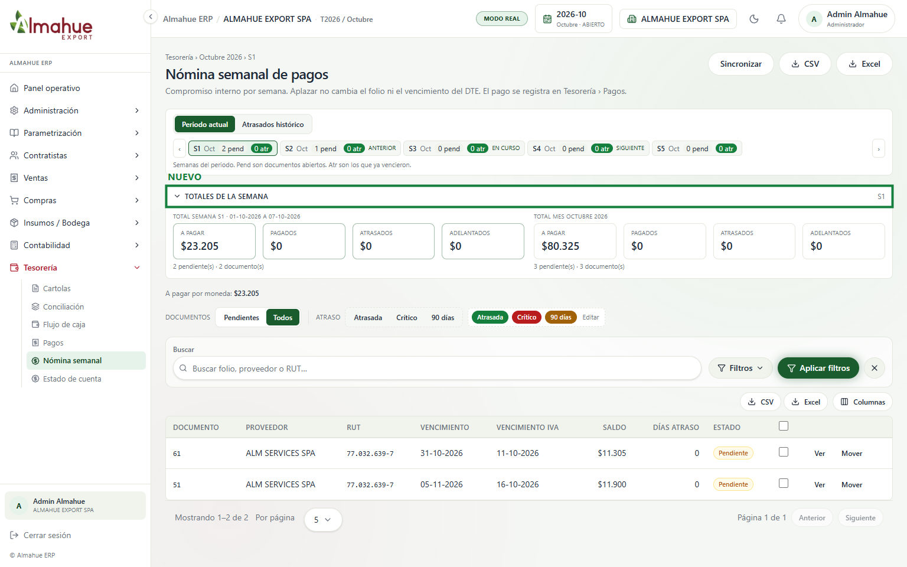
Las dos tarjetas de la semana S1 y del mes quedaron dentro de Totales de la semana. Los montos salen de los documentos pendientes de la nómina. No se apretó Sincronizar, CSV, Excel, Ver ni Mover.
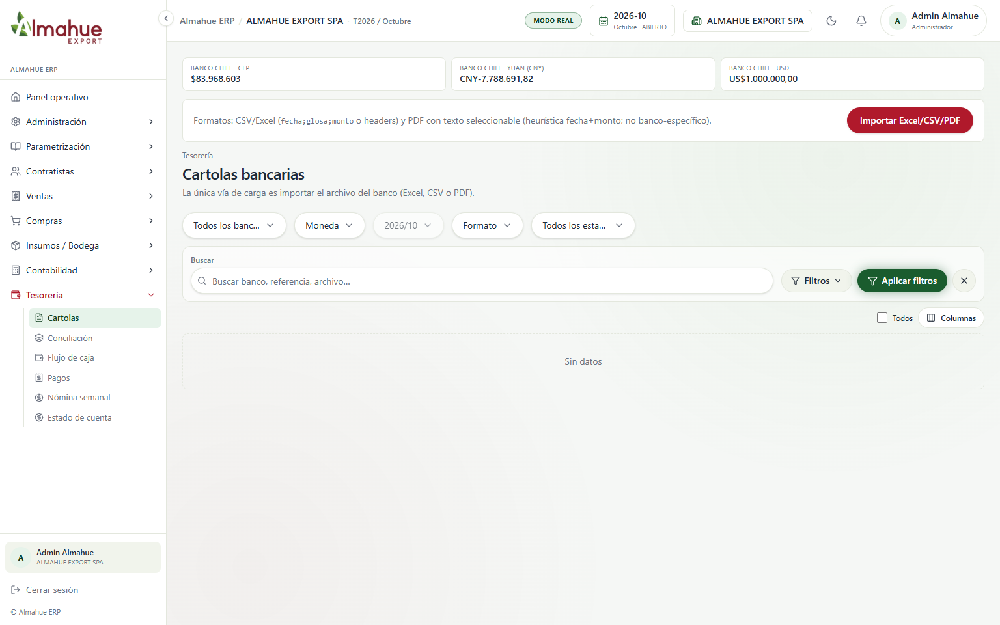
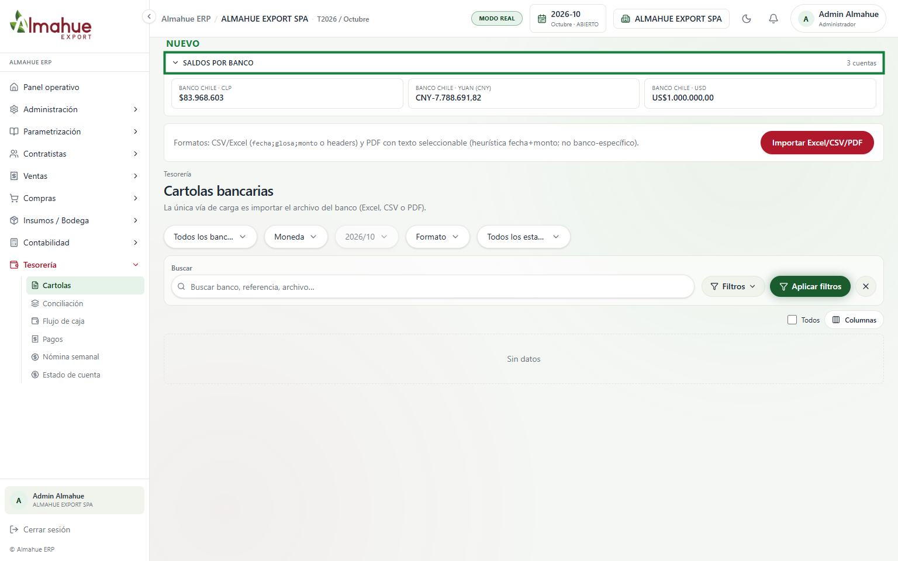
Los tres saldos (Banco de Chile en pesos, yuan y dólar) quedaron bajo Saldos por banco. Salen de aperturas y cartola contabilizada. No se importó ningún archivo.
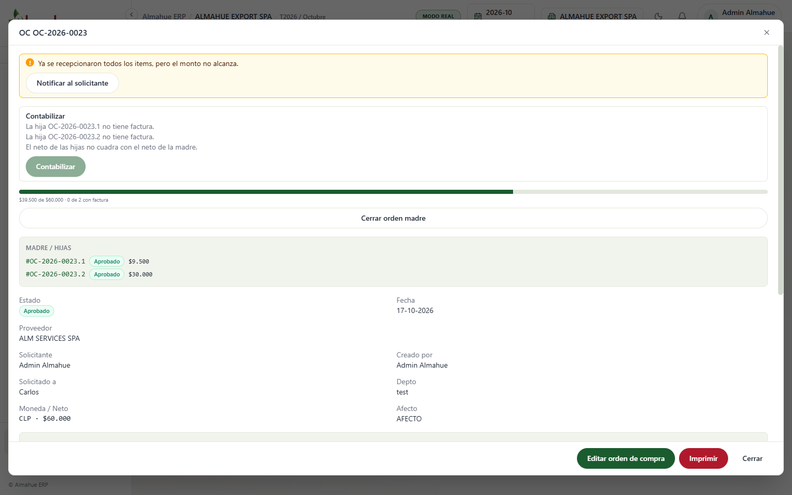
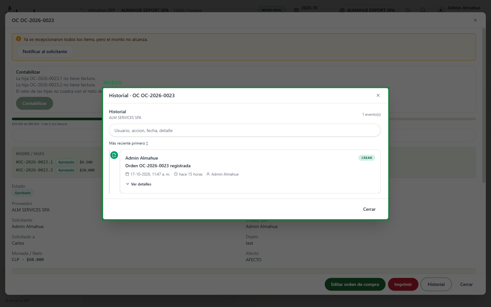
El detalle de la orden tiene Historial. Muestra quién la registró, el día y la hora. Esta orden ya existía, así que el primer evento se arma con el creador guardado en la orden. No se apretó Contabilizar, Notificar al solicitante, Editar ni Imprimir.
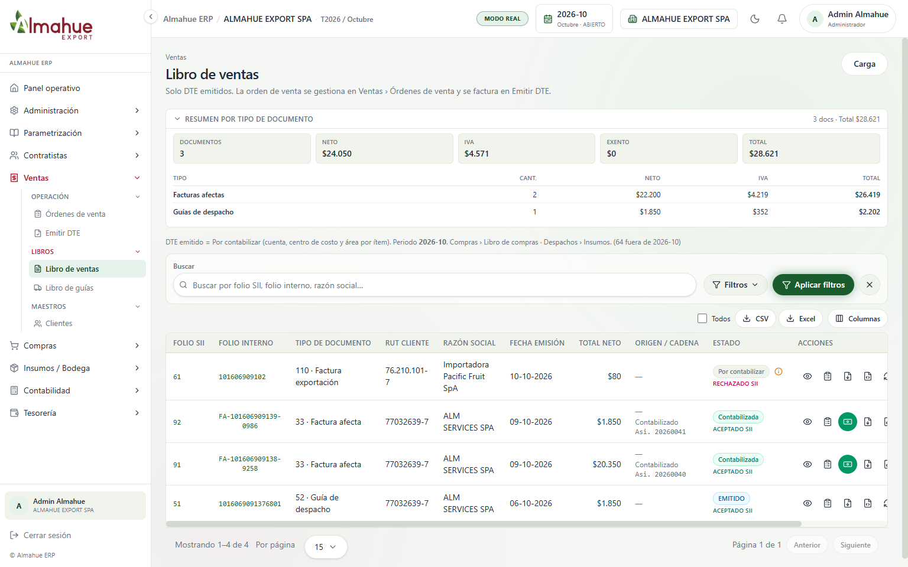
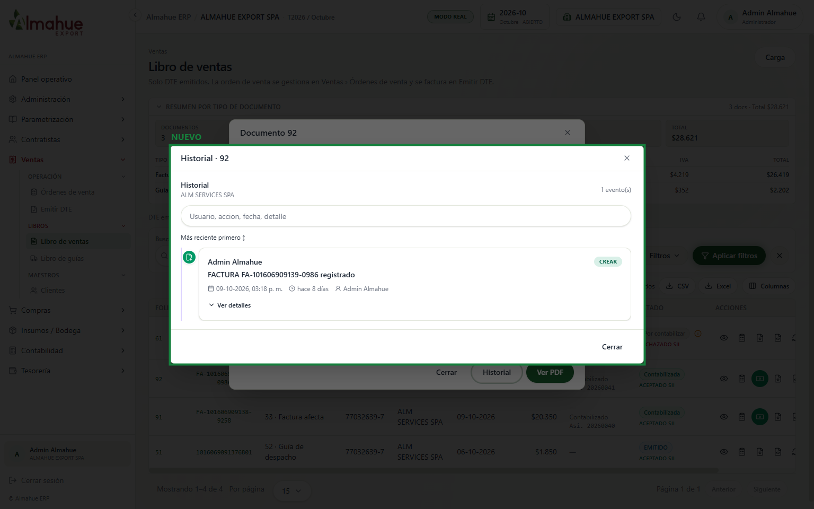
En la vista del documento hay Historial, aparte de los documentos asociados. La factura 92 ya estaba emitida: el evento muestra a Admin Almahue y el 09-10-2026 a las 03:18 p. m. No se apretó Ver PDF ni se contabilizó nada.